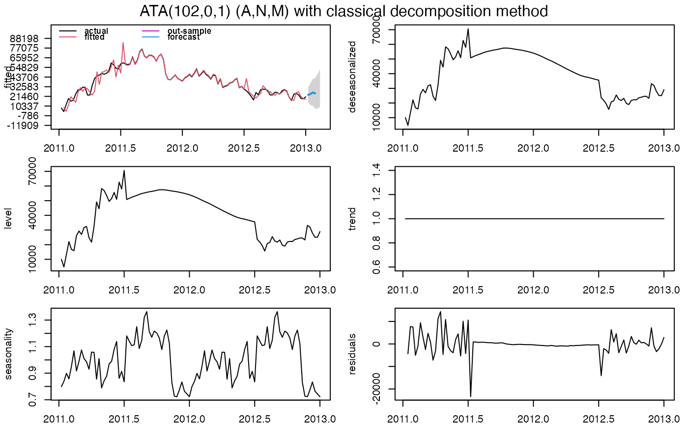
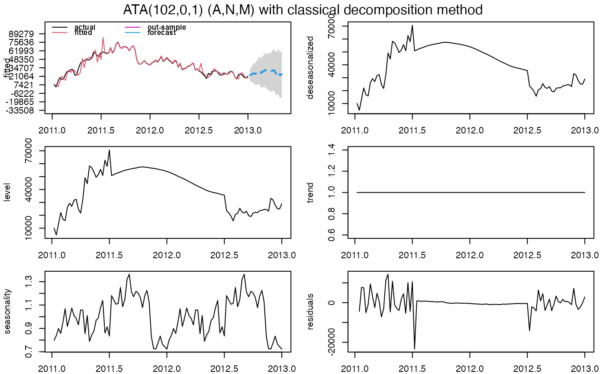

ATA.Forecast is a generic function for forecasting of the ATA Method.
ATA.Forecast( object, h = NULL, out.sample = NULL, ci.level = 95, negative.forecast = TRUE )
| object | An |
|---|---|
| h | Number of periods for forecasting. |
| out.sample | A numeric vector or time series of class |
| ci.level | Confidence Interval levels for forecasting. Default value is 95. |
| negative.forecast | Negative values are allowed for forecasting. Default value is TRUE. If FALSE, all negative values for forecasting are set to 0. |
An object of class "ATA".
Yapar, G., (2016) "Modified simple exponential smoothing" Hacettepe University Journal of Mathematics and Statistics Early Access. Doi:10.15672/HJMS.201614320580
Yapar, G., Capar, S., Selamlar, H. T., Yavuz, I., (2016) "Modified holt's linear trend method" Hacettepe University Journal of Mathematics and Statistics Early Access. Doi: 10.15672/HJMS.2017.493
Ali Sabri Taylan and Hanife Taylan Selamlar
#> ATA(100,3,0.4) #> #> model.type: M #> #> seasonal.model: no seasonality #> #> forecast horizon: 6 #> #> accuracy.type: sMAPE #> #> In-Sample Accuracy Measures: #> #> MAE MSE RMSE MPE MAPE #> 3.729235e+03 2.362539e+07 4.860596e+03 -1.317158e+00 1.169737e+01 #> sMAPE MASE OWA #> 1.166269e+01 1.358930e-01 2.150000e-04 #> #> In-Sample Accuracy Measures: #> #> MdAE MdSE RMdSE MdPE MdAPE sMdAPE #> 2.939302e+03 8.639497e+06 2.939302e+03 9.681180e-01 6.658816e+00 6.888151e+00 #> #> Out-Sample Accuracy Measures: #> #> MAE MSE RMSE MPE MAPE sMAPE MASE OWA #> NA NA NA NA NA NA NA NA #> #> Out-Sample Accuracy Measures: #> #> MdAE MdSE RMdSE MdPE MdAPE sMdAPE #> NA NA NA NA NA NA #> #> #> user system elapsed #> 6.84 0.03 6.94 #> #> calculation.time: 6.949 #> #> #> Forecasts: #> Time Series: #> Start = c(2012, 50) #> End = c(2013, 3) #> Frequency = 52 #> [1] 24843.52 24862.16 24869.61 24872.60 24873.79 24874.27 #> #>#> ATA(100,3,0.4) #> #> model.type: M #> #> seasonal.model: no seasonality #> #> forecast horizon: 18 #> #> accuracy.type: sMAPE #> #> In-Sample Accuracy Measures: #> #> MAE MSE RMSE MPE MAPE #> 3.729235e+03 2.362539e+07 4.860596e+03 -1.317158e+00 1.169737e+01 #> sMAPE MASE OWA #> 1.166269e+01 1.358910e-01 2.150000e-04 #> #> In-Sample Accuracy Measures: #> #> MdAE MdSE RMdSE MdPE MdAPE sMdAPE #> 2.939302e+03 8.639497e+06 2.939302e+03 9.681180e-01 6.658816e+00 6.888151e+00 #> #> Out-Sample Accuracy Measures: #> #> MAE MSE RMSE MPE MAPE sMAPE MASE OWA #> NA NA NA NA NA NA NA NA #> #> Out-Sample Accuracy Measures: #> #> MdAE MdSE RMdSE MdPE MdAPE sMdAPE #> NA NA NA NA NA NA #> #> #> user system elapsed #> 6.84 0.03 6.94 #> #> calculation.time: 6.949 #> #> #> Forecasts: #> Time Series: #> Start = c(2012, 50) #> End = c(2013, 15) #> Frequency = 52 #> [1] 24843.52 24862.16 24869.61 24872.60 24873.79 24874.27 24874.46 24874.53 #> [9] 24874.57 24874.58 24874.58 24874.58 24874.59 24874.59 24874.59 24874.59 #> [17] 24874.59 24874.59 #> #>